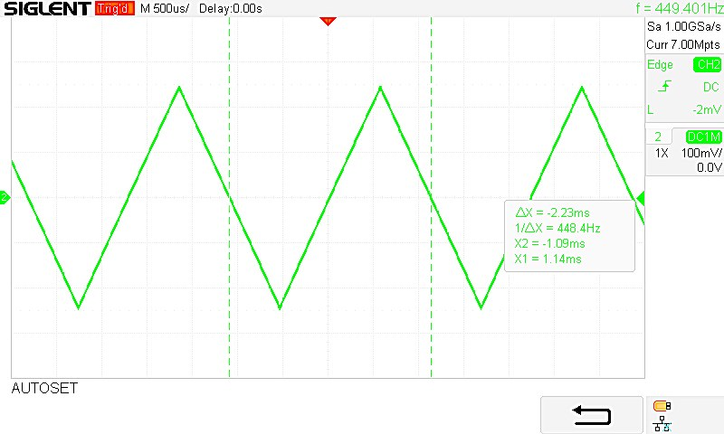
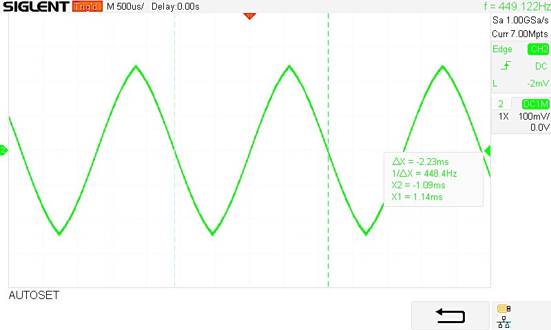
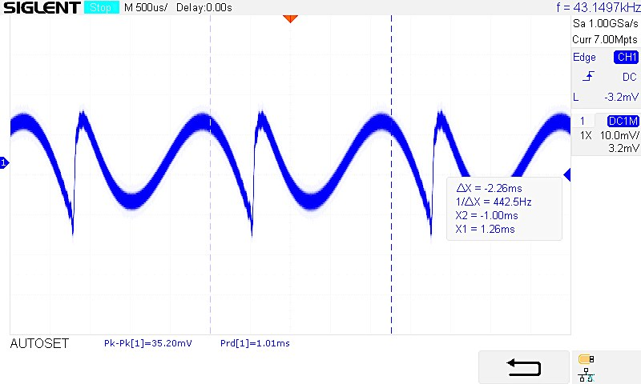
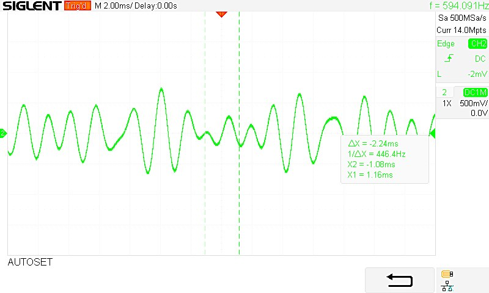
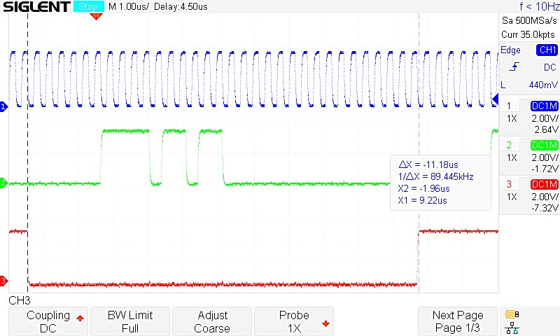

STM32 Polyphonic Sound Synthesizer
Designed and built a standalone digital synthesizer around the STM32F411. MIDI input triggers up to six simultaneous notes; each note combines two wavetable oscillators. The microcontroller produces audio in real time and sends it to a PCM5102 digital-to-analog converter.
System overview
From playing a note to hearing the audio
Input
MIDI keyboard and physical knobs
Generate
Six voices, two wavetable oscillators each
Shape & mix
Envelopes, modulation and shared low-pass filter
Stream
DMA buffering and I2S transfer
Play
PCM5102 DAC and analog audio output
The STM32F411 runs the synthesis and output pipeline; a 2×16 LCD displays control values over I2C.
Generating sound efficiently
Direct digital synthesis reads precomputed waveform samples from lookup tables, avoiding expensive waveform calculations for every audio sample. Each voice has its own envelope, with an additional fade-out stage to reduce clicks when notes are retriggered.
Keeping audio continuous
A double-buffered DMA transfer sends one half of the audio buffer to the DAC while the CPU prepares the next. This separates sample generation from transmission, allowing the synthesizer to play multiple notes without blocking the audio stream.
Oscilloscope measurements
Captured during hardware testing · select any image to enlarge



Figure 7.2 · Triangle waveSingle-note output

Figure 7.3 · Sine + triangleMixed oscillators

Figure 7.4 · Sine + sawtoothMixed oscillators

Figure 7.5 · A-minor chordThree-note polyphony

Figure 7.6 · I2S signalsDigital audio interfaceValidation: Measurements confirmed waveform generation, mixed oscillators, polyphony and I2S communication. The thesis also records a ~1.9% pitch deviation on a test note—an identified limitation of the implementation.